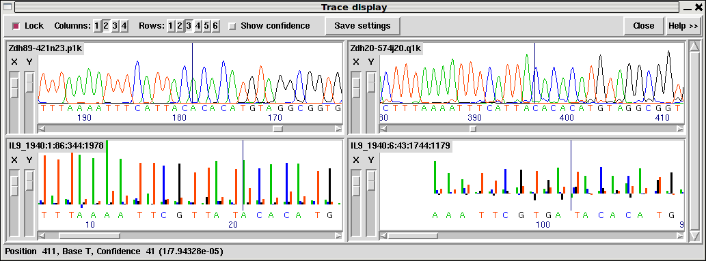

The original trace data from which the readings where derived can be displayed by double clicking (two quick clicks) with the left or middle mouse button on the area of interest. Control-t has the same effect. The trace will be displayed centred around the base clicked upon and the name of the reading in the contig editor will be highlighted. Double clicking on the consensus displays traces for all the readings covering that position.
Moving the mouse pointer over a trace base causes the display of an information line at the bottom of the window. This gives the base type, its position in the sequence, and its confidence value.
There are two forms of trace display which are selected using the "Compact" button at the top of the Trace display. The compact form differs by not showing the Info, Diff, Comp. and Cancel buttons at the left of each trace.
Note that Gap5 does not store the trace files in the project database: it stores only their names and reads them when required. By default it will attempt to look for them in the current working directory (likely the same directory as the gap database). However this can be adjusted to look in other directories or via URLs using "Trace file location" in the main Gap5 configure menu (see section Trace File Location).

This figure is an example of the Trace Display showing three capillary traces and an Illumina trace. On the top line, the Lock checkbutton keeps the trace data in sync with the editor cursor position. The layout is controlled by the Columns and Rows selectors at the top of the window; 2 column by up to 3 rows in the above screenshot. Show confidence draws coloured bars and a numerical value representing the quality of each individual base-call.
The main trace panels each have the sequence name displayed in the top left corner. Below this are X and Y zoom controls on the left and the actual trace data on the right. The style of this will depend on the type of trace. Sanger chromatograms take multiple samples per base and are subsequently analysed (base-called) to identify the peaks and the number/type of bases represented by that peak. These are drawn using smooth lines, examples of which can be seen in the top row of the image above. Illumina GA instruments are "clocked" in that each and every measurement corresponds to one base. These are drawn using a stick plot, as seen in the bottom row of the screen-shot. Note that it is quite likely you will not have the processed trace data available for Illumina GA sequences due to size constraints, so the above is simply an example of what could be viewed rather than a typical example.
454 instruments use pyro-sequencing and so produce a variable number of bases per measurement, with each measurement being clocked to a specific cycle (flow) on the sequencing instrument. Hence 454 data is also drawn using a stick plot, although with potentially multiple bases per measurement. An example is visible below.
The horizontal rulers in this plot correspond to normalised peak intensities for 1.0, 2.0 and so on to indicate 1, 2, 3... bases per flow. Clearly visible are flows of approximate height 1 (C T A G T on the left), 2 (the following AA) and 0 (the G between the left most C and T). Above these the confidence bars are visible.
Right clicking on a trace will bring up a popup menu containing the following options.